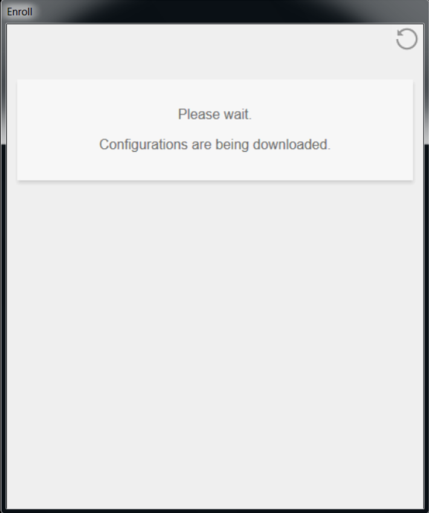
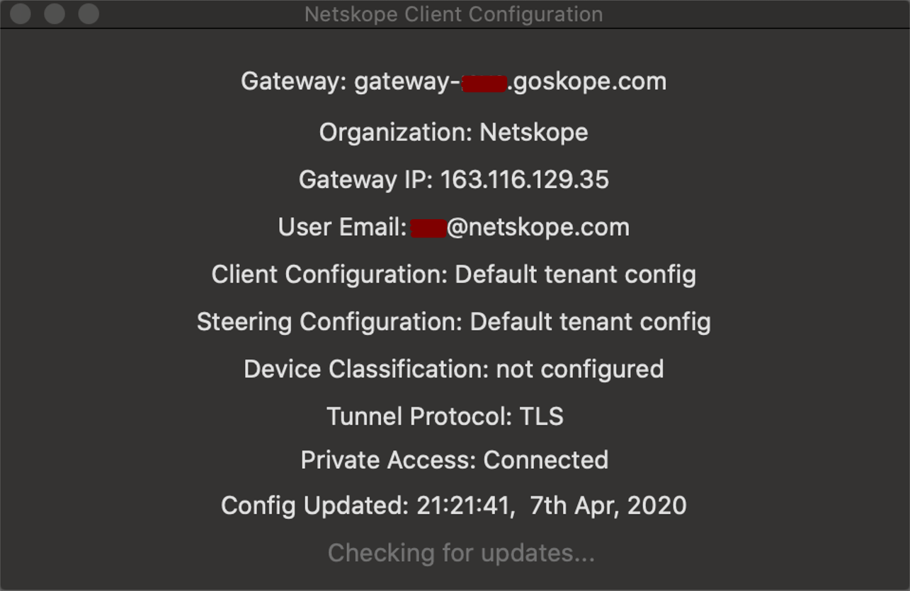

Install the Netskope Client in IdP Mode and Enroll Users For Mac
The Netskope Client (v71 and above) can be installed a couple of ways for IdP mode:
Install NSClient.pkg without any parameters (This will prompt the user for the Netskope tenant name, and then ADFS login details.)
Install NSClient.pkg with IdP parameters in multi-user mode (This will prompt user for ADFS login details only.)
Install NSClient.pkg with IdP parameters in multi-user mode using JAMF software deployment tool (This will prompt user for ADFS login details only.)
Note
The latest JAMF scripts can be downloaded from Netskope support portal here.
The third option is recommended, but this document describes the second option, the deployment that uses JAMF script and does not leverage the JAMF service.
You need Admin rights to deploy the Netskope Client on to the endpoints.
Download the NSClient.pkg installer to your download folder on the MAC. You can download the Netskope Client for MAC from your Home POP:
https://download-<tenant name>.goskope.com/dlr/mac/get
https://download-<tenant name>.eu.goskope.com/dlr/mac/get
https://download-<tenant name>.de.goskope.com/dlr/mac/get
Download the JAMF Script from Netskope support portal to your downloads folder on the MAC, and give appropriate permissions to the script as shown:
sudo chmod 755 jamfnsclientconfig_v9.sh
Note
The version number v9 of the script may change after updates occur.
Run the script once with the parameter as shown below. This script requires a few parameters including:
Few dummy placeholder parameters
Mode IdP
Tenant prefix and domain
Requestemail (0/1)
Peruserconfig (to allow for this to be installed for multiple users)
The script needs to be run with elevated permissions as certain directories are created to store the initial files.
For IdP mode usage:
jamfnsclientconfig.sh <dummy param 1> <dummy param 2> <dummy param 3> idp <domain> <tenant> <requestEmail 1/0> [peruserconfig]
Example: The script with provided values is shown for tenant (lab.goskope.com)
sudo ./jamfnsclientconfig_v9.sh 1 2 3 idp goskope.com LAB 0 peruserconfig
Installation is configured for peruserconfig mode
Installation is configured for IdP mode install
Param1 1 Param2 2 Param3 3
All Logged in user names: labuser01
Logged in user name: labuser01
User name is 3 length 1
IdP Service Provider Domain is goskope.com
IdP Service Provider Tenant key is LAB
Double-click on the NSClient.pkg installer downloaded in previous steps
Installation will start and prompt for User Account Control to authorize the app. After installation completes, click Finish.

This will prompt you for ADFS login ID and password. This window will continue to prompt you until credentials have been entered. Enter your credentials and click Sign-in.
After a successful login, the Netskope Client will validate the email address of the user in the tenant and download the configuration files from the tenant.
 After configurations files have been downloaded successfully, the Client will enroll itself and display Enrolled successfully. Click X to close the window, or it will auto-close in 5 seconds.

Right-click the Client and select Configuration. This will display the email address, gateway, and organization name registered on the device.

 User can also Unenroll if the option is enabled in the tenant under Settings > Active Platform > Devices > Client Configurations.